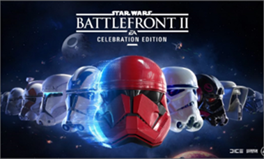
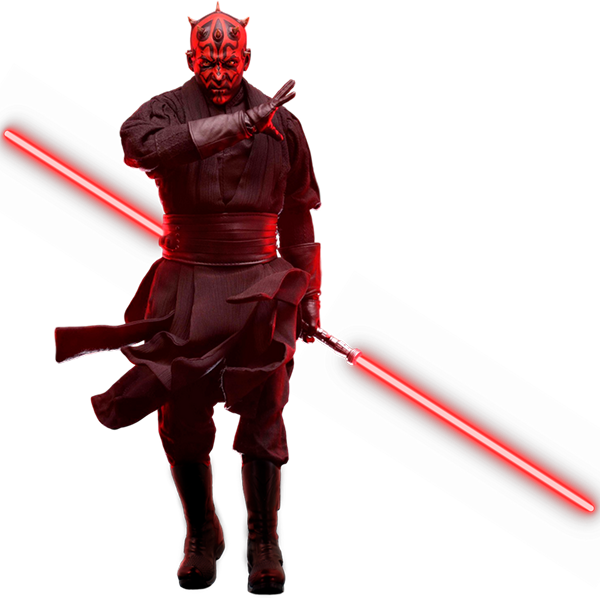
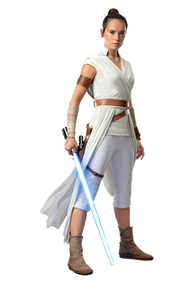

sobre o jogo
Star Wars Battlefront é um jogo eletrônico de tiro em primeira e terceira pessoa, produzido pela DICE e baseado na franquia Star Wars.
Foi publicado pela Eletronic Arts com chancela da Lucas Arts em 17 de Novembro de 2015 para Microsoft Windows, PlayStation4 e Xbox One.


estrutura de jogo
- jornada
- a batalha do guerreiro estelar
- herois contra os vilões
- a batatlha galáctica
- superioridade
- fliperama
